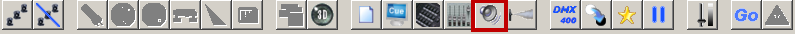
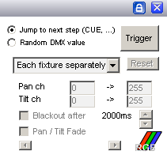
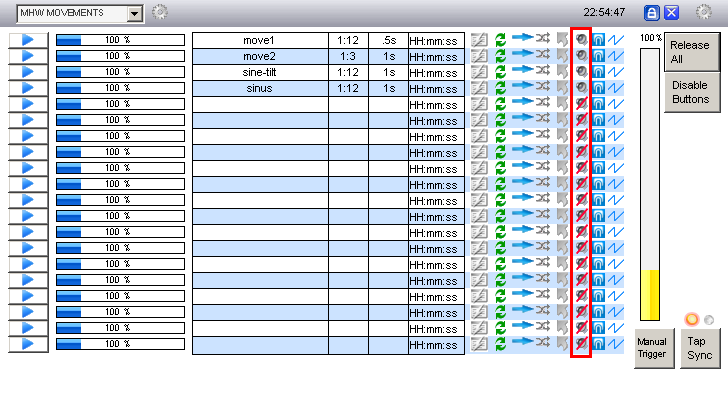
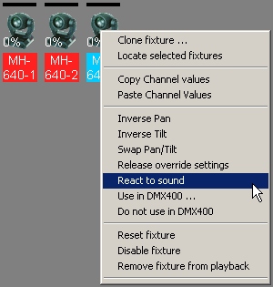
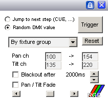
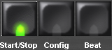
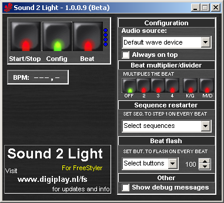
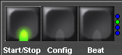

Table of Contents

Sound to Light Interface
Sound 2 Light is the free 'beat detector' for FreeStyler - it records the audio from your favorite selected soundcard, analyses the audio and calculates where the beats are. Those beat moments are sent to FreeStyler for nice light shows. you can make the fixtures or sequences (including the DMX400) react to the music.
This S2L application replaces the old SL.exe that was delivered with FreeStyler 3.1 and older. In FreeStyler 3.2 and newer this S2L application is delivered by default. Click here for webpage and download
OBS: Be sure to use the most recent version of S2L (beta 1.0.0.9) since the earlier version (1.0.0.5, in the freestyler package) has a bug preventing it from proper function on some installations.
Note: On may 13, 2013 a new version was released: 1.0.1.11. Click here for webpage and download
{kind=link}
{kind=link}
The FS forum user remco_k is the developer of the new Sound 2 Light program and he continually upgrades the program. This page will describe the features for the latest beta version 1.0.0.9 but it will be noted which features is in the stable version and the beta.
Minimum system requirements (all versions)
- Windows 2000/NT/XP/Vista
- Pentium III processor at 500 MHz or higher
- 256 MB RAM
- 1 MB available hard disk space
- A soundcard with line-in, mic-in or a system with build in microphone
Sound 2 Light features
Version 2.0.0.0
- can be found here: digiplay.nl
- For the first run you need to switch it off (press Start/Stop to make it red), then select at “config” the audio signal and at the end press again “Start/Stop” to make it green.
Version 1.0.1.11 (stable)
- Changes in this version since Beta version 1.0.0.10:
- [NEW] Auto start option in config.
- Changes in this version since version 1.0.0.0:
- This is a sum of all beta release notes to 1.0.0.10.
Version 1.0.0.0 (stable) and later
- Adjustable Beat Decay: sets the time to hold the beat to prevent multiple false beat detects in just 1 beat.
- Adjustable beat frequency: sets the frequency for the beat detection.
- Always on top switch: to stay on top.
- BPM counter
- AGC - Automatic Gain Control:
Version 1.0.0.9 (Beta) and later
- ATC - Auto Treshold Control: This can help for better beat detection. Default: Off, can be switched on.
- ABC - Auto Beat decay Control: For an automatic more stable beat trigger output. This control works with info from the BPM counter. Default: Off, can be switched on.
- Beat multiplier: The beat multiplier allows you to send up to four “virtual” beats to freestyler when every real beat is detected. You can use this if you have more than one step in a sequence you want to execute when one beat is detected. the four blue lights on the right of the Beat button indicate the status.
- Beat divider: With this function you can divide beats by 2,4,6 or 8. Meaning that every 2nd beat (if 2 is selected) the beat is send to FreeStyler, the other is not. You can use this function by swapping the Beat multiplier/divider with the new M/D button (Multiplier / Divider). When pressed, the interface changes slightly and the controls change to Divider controls. When pressed again, S2L switches back to the Multiplier functionality.
- Sequence restarter: When using the beat multiplier there is an option to restart selected sequences to step 1 when a real beat is detected. This allows flashing of strobes or other fixtures on the beat.
- Beat Flash: This allows the user to assign one or more override buttons in S2L to control. Every beat the override button is pressed. This allow users to simple flash lights tot the beat without having to use the multiplier and multi step sequences. Flash duration can be set in msec from 100 to 10000 msec.
Using the Sound to Light
To open the sound to light control window in Freestyler click on the “Sound to light” icon which is a speaker in the Toolbar of Freestyler's main window:

{kind=link}
The external “sound 2 light” programme starts up and the sound to light control window will appear in FreeStyler with the following modes

{kind=link}
- Jump to next scene: Controls running sequences and the DMX400 chaser
- Random DMX value: This generates random values for following fixture channels: gobo, color, pan & tilt. the options below “Random DMX value” is for this mode only.
Jump to next scene
When you are using this mode you can choose which of your sequences are controlled by the beat from the sound 2 light programmer. Each beat will trig the chosen sequence to go to next step1). In the cue window there is some columns with settings for each sequence. Click on the speaker icon for the sequences you want to be controlled by the sound 2 light programme. the not selected sequences will run normally with the programmed step time2).

{kind=link}
Random DMX value
In this modes fixtures enabled to react to sound will be controlled by the sound to light control in freestyler.
the sound to light control generates a random value for following fixture channels: gobo, color (colorwheel and RGB), pan & tilt.
Enable the wanted fixtures to react to the sound: Right click on a fixture and choose “React to sound”.

{kind=link}
in the control window you have the following options

{kind=link}
- Dropdown menu
- Each fixture separately: Each individual fixture gets random values different from the others
- By fixture group: Every fixture in a gruop gets the same values3), the groups get different values.
- Pan ch: Configure which range of DMX values the pan channels get. this way you can avoid the fixture to point a undesirable places
- Tilt ch: Configure which range of DMX values the tilt channels get. this way you can avoid the fixture to point a undesirable places
- Blackout after: With this option enabled the fixture chosen to react to sound will blackout when no beat is detected in a configurable time
- Pan / Tilt Fade: With this option enabled the pan/tilt channel fades between the values. you set the desired fade timer by the scrollbar.
In both modes you have to activate the beat detecting in the “sound 2 light” programme. In the following sections it will be described how to set up the “sound 2 light” programme depending what option you have chosen in Freestyler.
in the main window of the beta 1.0.0.9 there is 3 big buttons with lights (LED's)

{kind=link}
- Start/Stop: activate (green light)/deactivate (red light) the beat detection
- Config: this button will change the main window to the configurations
- Beat: indicates with the light when a beat is detected. furthermore pressing this button will send a beat trigger to FreeStyler
Configuration
pressing the “Config” button in the main window will change it to the configuration window where you can configure a lot of cool features.

{kind=link}
Configuration - Audio Source
Before activating the S2L beat detection you have to select the Audio source, which from the S2L program will do the beat detection. Click on the drop down menu and select a audio source. the number of options may differ for each computer you are running the S2L programme on depending which type of soundcard(s) and/or sound programs which is one the computer.
{kind=link}
in this configuration area you can also choose to select the “always on top” options which allow the S2L programme to be visible at all times.
Beat multiplier/divider
{kind=link}
In this area you can activate and configure the multiplier/divider. When the “M/D” button is lighting red the rest of the buttons works for the beat multipler feature (as shown on the picture above). this means you can cinfigure how many beats you want the S2L program to send to freestyler (if you want several steps to run after eachother on one music beat. you can chose between 2 and 4 multpliers for each music beat the S2L is detecting. the “K/G” button means that the beat multipliers will be send to freestyler continuously independent the S2L is detecting a music beat or not.
When the “M/D” button is lighting red some buttons will change and now controls the beat divider feature (as shown on the picture below). now this feature would give you the possibility divide the beat from the audio source. Let's say you only want a beat trigger to Freestyler on the second beat of the music, then you activate the divide feature and chosse the “2” button
{kind=link}
Logically you cant use the beat multiplier and divider on the same time. that is why you only can see the control from one of the at the time.
The 4 blue lights (LED's) or dot is showing the status for the multiplier/divider when one of these feature and the beat detecting is activated

{kind=link}
\\\MISSING\\\\
== Sequence restarter ==
{{:s2l-beta-seq_rest.png|}}\\
== Beat flash ==
{{:s2l-beta-beat_flash.png|}}\\
== Other - Debug logging ==